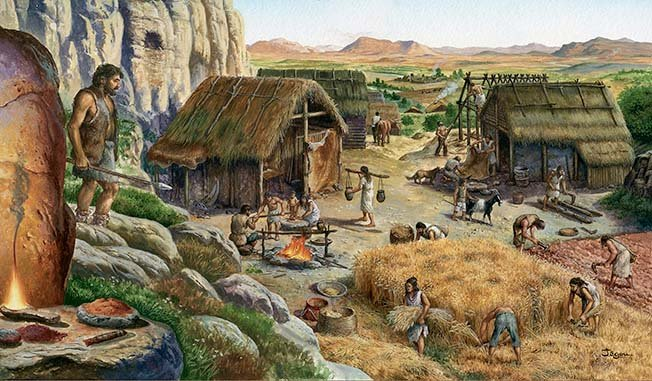
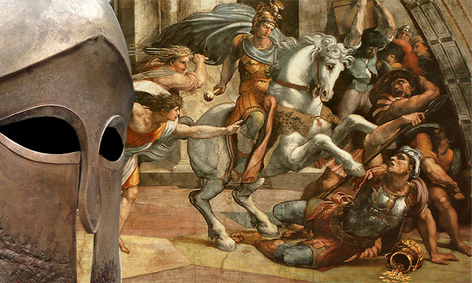
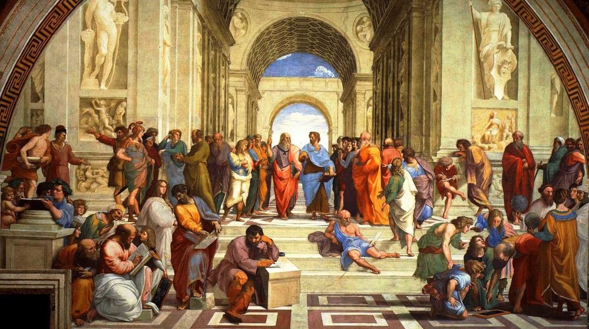
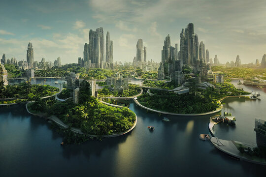

-3 000 000 à -10 000
Dans l'ère glaciaire du Paléolithique, l'environnement était un paysage de toundra et de vastes
steppes, façonné par les cycles incessants de chaud et de froid. L'homme, nomade et
chasseur-cueilleur, était un maillon de cet écosystème immense. Il traquait la spectaculaire
Mégafaune : des Mammouths laineux, des Rhinocéros laineux et de grands cerfs, dont la survie
dépendait de la maîtrise du feu et de la taille de la pierre. La survie n'était pas un combat
contre la nature, mais une adaptation quotidienne à la puissance brute et majestueuse du monde
sauvage.

Néolithique
-7 000 à -3 500
Le Néolithique est la période où les humains passent d’un mode de vie nomade de
chasseurs-cueilleurs à une vie sédentaire fondée sur l’agriculture et l’élevage. Au Néolithique,
qui débute vers 10 000 av. J.-C. au Proche-Orient, les hommes commencent à cultiver les céréales
et à domestiquer les animaux. Ce changement radical est souvent appelé la “révolution
néolithique”, car il transforme profondément la société : les humains deviennent producteurs de
nourriture au lieu de simples prédateurs.

Âge du bronze
-3 500 à -1 200
Les hommes découvrent comment fabriquer le bronze, un alliage de cuivre et d’étain, plus solide
que la pierre ou le cuivre seul. Grâce à ce métal, ils créent des outils, des armes et des
bijoux plus résistants. Les sociétés deviennent plus organisées, le commerce se développe pour
échanger les métaux rares, et les villages s’agrandissent. Cette période prépare le passage vers
l’Âge du fer et les premières grandes civilisations.
Civilisations antiques
Égypte, Grèce, Rome…
Une escapade romantique à travers les musées, jardins et cafés.

Renaissance
~1450 à ~1600
Une escapade romantique à travers les musées, jardins et cafés.

Utopia
An 35 00
Le soleil filtrait à travers les dômes de verre biophotovoltaïque, inondant les cités d'une
lumière douce et sans chaleur excessive. Ici, les gratte-ciel étaient des forêts verticales, où
l'air était plus pur qu'en haute montagne. Les véhicules glissaient silencieusement sur des
rubans magnétiques, s'effaçant devant les piétons qui se déplaçaient sans hâte. Chaque personne
portait une légère lueur de sérénité, car la rareté, la maladie et la peur étaient devenues des
légendes.
Chaque semaine, recevez « La Lettre » qui vous immerge dans la vie
locale. Découvrez en avant-première : nos éclairages sur les
destinations, les conseils de nos spécialistes, nos coups de cœur, et nos
dernières tendances pour faire le plein d’inspirations.
En savoir plus